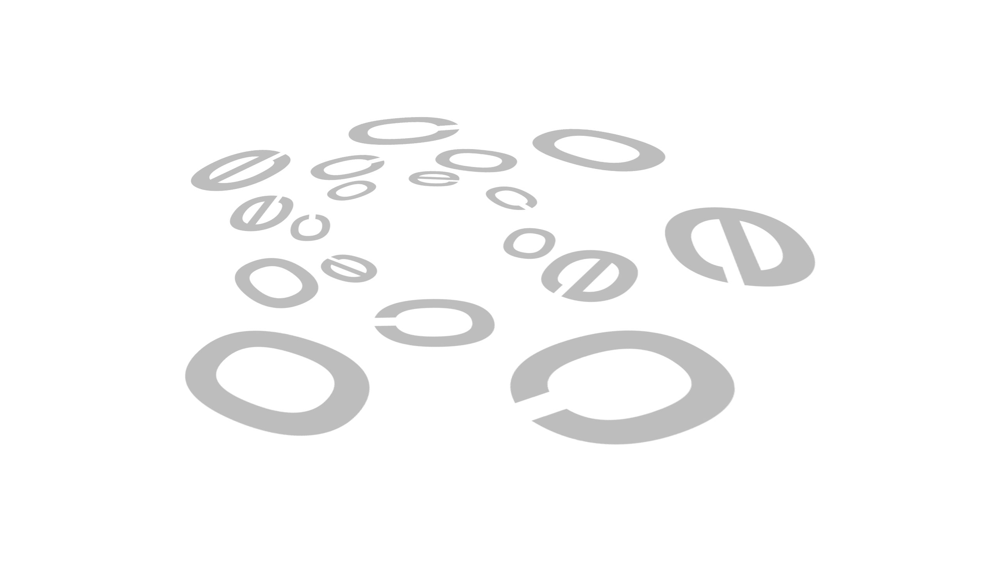

Contorno aberto
Ovóides, cortes e repetições partem das pranchetas da marca. A abertura dá direção às formas.

Direção de arte da interface
Um sistema visual para ecoeco. Formas suaves, espaço para respirar e movimento que responde ao toque.
Protótipo interativo · rodadas 08–09
Não há personagem: você olha o planeta. Arraste para girar e use a pinça (dois dedos, ou a roda do mouse) para aproximar. Siga o eco e faça o primeiro planeta inteiro: gota, polinizar, minerar, plantar, canal, colheita, evolução, núcleo, placa, nave e decolagem. Afaste tudo para abrir o menu do planeta. Os atalhos levam direto às cenas.
Pista atual: buscar · pista 0
Primeira região revelada
 Planeta Terra
Vulcânicoao alcance
?fora do alcance
?sinais de criaturas
Planeta Terra
Vulcânicoao alcance
?fora do alcance
?sinais de criaturas
Melhorias na nave aumentam o alcance e revelam novas regiões.
Como este protótipo segue o jogo
Protótipo interativo · rodada 05
Toque no bichinho para observar e abrir o leque. Ele mostra só o que dá para fazer ali. Recolha o que aparecer com um toque.
Anel de vidro líquido. Bolhas orgânicas em volta do bicho e uma luz quente que segue o dedo. Passe o mouse pelo palco.
Hipóteses desta rodada
Protótipo interativo · rodadas 04–05
Afaste a câmera até o planeta ficar pequeno. As bolhas do menu aparecem em volta dele, e cada uma abre uma folha de vidro.
No celular, a pinça faz esse papel. No navegador, use a roda do mouse sobre o palco ou o controle acima.
Hipóteses desta rodada
Estudo anterior · rodadas 01–02
Explore dois desenhos para o mesmo menu. Toque num ícone para ver a resposta do anel.
Superfícies macias agrupam as ações em torno de um centro livre.
Regar O preenchimento e o pulso visual indicam a seleção.
Ações ilustrativasSistema visual
Uma linguagem provisória para controles, ícones e respostas visuais de ecoeco.
Ovóides, cortes e repetições partem das pranchetas da marca. A abertura dá direção às formas.
Marfim e tinta dão a base. Lilás dá corpo ao controle. Lima, preenchimento e texto marcam a seleção.
O menu abre do centro. Ao selecionar, o foco muda e um pulso curto assenta o gesto. A leitura funciona sem áudio.
Identidade ecoeco
A assinatura em linha abre a apresentação. O símbolo concêntrico dá forma ao botão central, e o estudo em perspectiva orienta a expansão do anel.

As respostas ficam neste navegador. Copie o resumo para compartilhar com a equipe.
Pesquisa visual
Formas que se unem, direção dos ícones, uso do vazio e animações que respondem ao gesto.